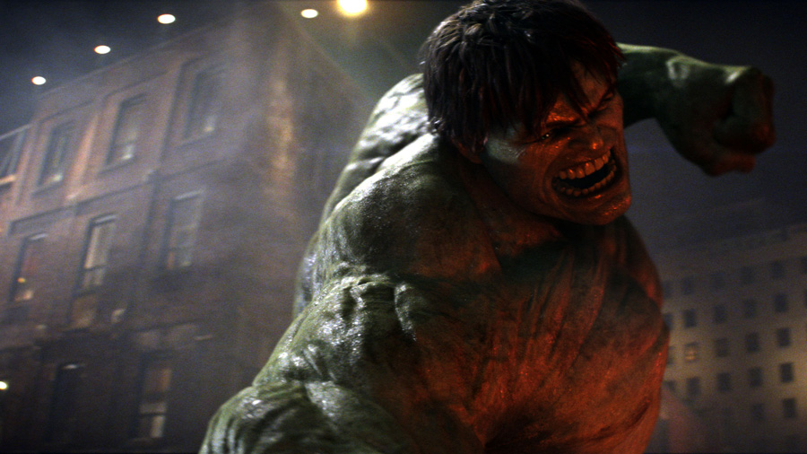

I was hired soon after my apprenticeship and completed a
decade of various roles as a professional VFX animator for
Rhythm & Hues. Of the 19 feature films, I am proud to have
been a part of 2 Academy Award-winning productions for Visual
Effects with this very deserving team.
Alongside working as an animator, I developed and supported a
widely used, proprietary animation toolset called "AnimTools".